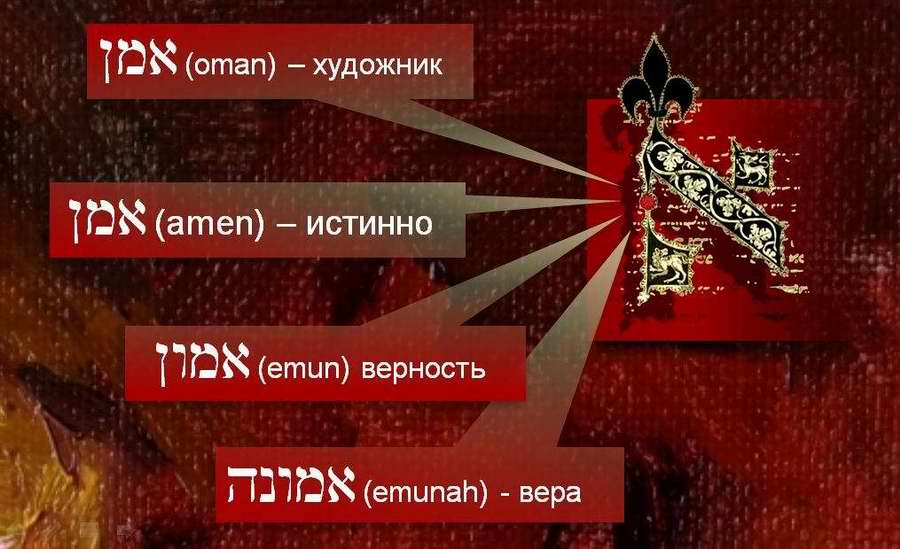

His Hands Were Faith (Exod. 17:12)
The Hebrew for artist is OMAN. Oman (artist) and emunah (faith) are words of the same root and ideas of the same order. They speak of the same thing, as it were, from different sides. God gives these gifts (faith and creativity) to every person so that he can interact with the Creator. Without faith we cannot see God. It is important for a person of faith to realise this and to develop the seed sown in him.
HIS HANDS WERE FAITH EXOD. 17:12
אֱמוּנָה וַיְהִי יָדָיו
VA-YEHI YADAV EMUNAH
The use of the word OMAN in the modern language differs somewhat from the language of the Bible. Today it is like the English "artist" (an artist in the broad sense of the word). Of particular interest is the meaning of this word in the text of the Bible. We meet it only twice in the Tanakh.
It goes back to another Hebrew word that everyone knows: AMEN. This word is spoken often all over the world. In the original Hebrew it is stressed on the last vowel, amEN. The three letters that make it up (alef-mem-nun) are the root common to a whole "family" of words.

Here are a few words with the root a-m-n:
1. OMAN (= AMAN): artist
2. AMEN: truly, verily
3. EMUN: trust
4. EMUNAH: faith
"…His hands were faith" (Exod. 17:12)
אֱמוּנָה (0530) [emunah]: 1. faithfulness, reliability; 2. steadfastness, firmness; 3. honesty, truthfulness.
"…And Aaron and Hur stayed up his hands, the one on the one side, and the other on the other side; and his hands were faith [KJV: were steady] until the going down of the sun."
וְאַהֲרֹן וְחוּר תָּמְכוּ בְיָדָיו מִזֶּה אֶחָד וּמִזֶּה אֶחָד וַיְהִי יָדָיו אֱמוּנָה עַד־בֹּא הַשָּׁמֶשׁ׃
Exod. 17:12
The King James Version says: "his hands were steady". Literally, however: "his hands were faith" (va-yehi yadav emunah). This was a most vivid act of creation. Moshe was creating a different reality. Israel was winning not only by the will of the Most High. God and man were creating reality together. This is shown by the fact that when Moshe's hands grew weak, Israel began to lose. God's providence and Moshe's FAITH did this. That is, Israel was winning by Moshe's faith, and the visible sign of this faith was his hands raised to heaven. More than once our fathers created a new reality by faith (see Hebrews 11).
Faith is action; it is the creation of a new reality. Faith is creating together with God (or co-creating with God).
But creativity itself certainly presupposes contemplation too. It is impossible without it, since we are speaking of CO-creation with the Creator. It is like playing a piece for four hands, where the partners have to listen to each other.
The definition of faith in the Epistle to the Hebrews (11:1) in fact describes the creative process. What is invisible to the eyes of many is revealed to the artist, so that through his creative work he may bring about, embody what is hoped for in his works, and the revelation may become evident to many.
In general, man is by nature a believing being. He was created so from the beginning. Faith is the condition of human existence.

DANIEL KRUGLOV: musical improvisation on the weekly Torah portion (Shemot / Exod. 13:17–17:16)
"The just shall live by his faith." Hab. 2:4
וְצַדִּיק בֶּאֱמוּנָתוֹ יִחְיֶה
TSADIK BE-EMUNATO YIHYE.
אֵמוּן (0529) [emun]: faithfulness, reliability, truthfulness, truth.
"…the righteous nation which keepeth the truth." Isa. 26:2
גּוֹי־צַדִּיק שֹׁמֵר אֱמֻנִים׃
אמן (0539): [omen – emin]: 1. to be faithful, reliable, to be unshakeable; 2. foster-father, nurse.
Avram believed the LORD, and He counted it to him for righteousness.
וְהֶאֱמִן בַּיהוָה וַיַּחְשְׁבֶהָ לּוֹ צְדָקָה׃
Gen. 15:6
Genesis 15:6 is the first use of this root in Scripture. One of its meanings (0539) is a foster-father or tutor: the one to whom a child is entrusted. He must be worthy of trust.
אָמֵן (0543) [amen]: 1. noun: truth; 2. adverb: truly, surely, amen.
We often say this word without thinking. Yet it is not just a word with which a prayer is customarily ended. It is like a seal confirming the truth of what has been said. When we say amen, we take responsibility for our own (or someone else's) words.
An artist, in creating, takes responsibility for his works…
Faithful (amin): faithful to someone, faithful to one's word. The artist is faithful to the One who called him and gave him all his talents (see the parable of the talents, Matt. 25:15–28, for which each will give account).
Another meaning, no less relevant for the artist: TRUE, in the sense of a right, true view of this world, of people and of the One who made everything.
That is, the artist's creative work should strive for truth in seeing and conveying the reality around us. When I say a true rendering of reality, I do not at all mean naturalism, hyperrealism and the like. It may be any movement in art. True, in our case, means the right angle of view, seeing through the prism of Scripture, striving to see "with the eyes" of ha-Creator (through the right glasses). Of course, the artist may make mistakes (God does not take this right away from us at all; He only wants us to check ourselves constantly against His truth, His understanding, and to seek His vision…).
I do not mean that human creativity can itself be truth. It can strive to know the Creator, endlessly approaching that very truth whose source and keeper is the Most High alone.
In practical terms this approach presupposes:
1. A personal, living relationship with the Creator. I don't think a serious artist needs this explained at length; he knows what it means to seek living inspiration, the "muse".
2. To see truly and to convey truly. A good example is Bezalel. He was required to convey truly what had been seen on the mountain.
Interestingly, in Armenian "am" means "all" and "en" means "God", so that together, forming the word "amen", they sound in Armenian like "the One who made everything". This proves nothing about Hebrew, but it is very interesting all the same.
FAITH is inseparable from creativity, and creativity is impossible without faith (this applies also to those who call their faith atheism…). True creativity (that which carries a gleam of truth) is inseparably bound to the word of truth and to the CREATOR who sent that word. It is no accident that oman and emunah have one root (they once had, and will have in the future).
אָמָּן (0542) oman [= aman]: skilled master, person of art, artist.
"How beautiful are thy feet with shoes, O prince's daughter! … the work of the hands of a cunning workman." Song 7:1 (Heb. 7:2)
מַה־יָּפוּ פְעָמַיִךְ בַּנְּעָלִים בַּת־נָדִיב … מַעֲשֵׂה יְדֵי אָמָּן׃
A skilled master
So does the close kinship with all the words of the same root listed above affect the ideas of "ARTIST" and "CREATIVITY"? There is no FAITH without CREATIVITY, and no CREATIVITY without FAITH. This conclusion follows from the Hebrew language of the Scriptures. We come to the same conclusion if we reflect on the Greek text of the New Testament, if we take its description of FAITH.
So what shall we say?
1. Oman (artist) and emunah (faith) are words of the same root and ideas of the same order. They speak of the same thing, as it were, from different sides. God gives these gifts (faith and creativity) to every person so that he can interact with the Creator. Without faith we cannot see God.
2. It is no accident that these words, like their root, begin with the letter alef. "A" is the first letter of the Hebrew alphabet. It is, as it were, a symbol of God (remember: "I am the Alpha and the Omega"). Jewish tradition does not depict God. Alef begins every word of this a-m-n family, just as God the Creator begins everything. He is the beginning and the source of truth, faith, creativity…
3. It is no accident that faith is linked here with hands. Faith is called to create. Hands are a symbol of creation.
I INTEND TO COME BACK TO THIS SUBJECT, to look closely at the word ARTIST (OMAN) in one of the next articles.
And what do you think about your faith? And your creative work?
Author: Ephraim Kalish / Torah-Art
Read also on this subject:
BEZALEL, SON OF LIGHT. The Calling, part I
BEZALEL, SON OF LIGHT. Under the Shelter of the Most High, part II
BEZALEL, SON OF LIGHT. The Light of the LORD, part III
BEZALEL, SON OF LIGHT. Grandfather HUR, part IV
BEZALEL, SON OF LIGHT. One Who Glorifies God, part V
Called to Be Refined. Bezalel's Grandfather, HUR
The School of Bezalel. The Calling to Teach
The School of Bezalel. The Parent
The School of Bezalel. A Teacher's Heart
The Sanctuary: Mishkan and Mikdash
Bezalel. The Menorah, Sign of the School
A Direct Hit on the Target
 Different Understandings
Different Understandings Bezalel. One Who Glorifies God
Bezalel. One Who Glorifies God The School of Bezalel: The Calling to Teach
The School of Bezalel: The Calling to Teach